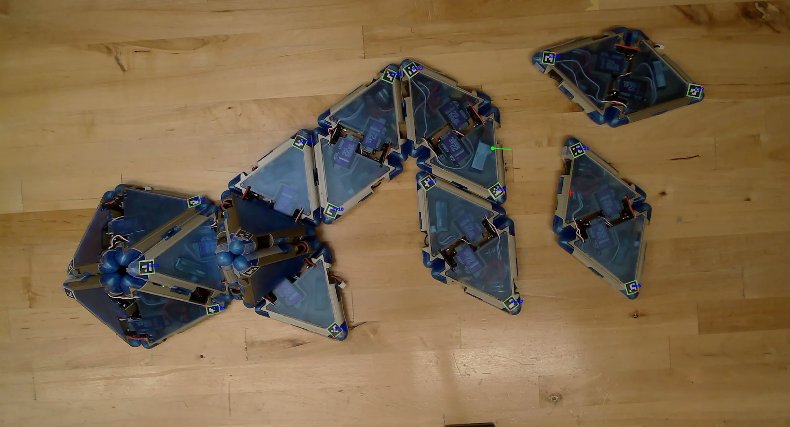

Replicate Project · Ongoing work
Autonomous Robotic Budding
An overhead camera closes the loop: a modular robot finds loose modules, docks them one by one, and buds off an offspring with no teleoperation.
Creative Machines Lab, Columbia University · Prof. Hod Lipson
Overview
In Robotic Budding, a parent robot built from homogeneous modules collected loose modules, folded them into an offspring, and separated from it. Every step was teleoperated, and the paper named autonomous navigation and closed-loop docking as the next problem.
This follow-up closes that loop. An overhead camera tracks every module through fiducial markers, and a controller chooses the robot's next motion from what it sees. The run starts and finishes on its own: the parent collects every module, folds the offspring, buds it off, and both robots walk away.
Locate
The camera finds the parent and every loose module.
Collect
The controller steers the parent to each module, and magnets make the dock.
Fold and bud
The collected modules fold into an offspring and separate from the parent.
Walk away
Parent and offspring each walk off as independent robots.
| Robotic Budding (teleoperated) | This work | |
|---|---|---|
| Who chooses each motion | A human operator | A vision-based controller |
| How docking is confirmed | The operator watches | Detected from the camera image |
Videos
Three-module trilobite
The trilobite parent collects three loose modules, folds them into a second trilobite, and separates. Both robots then walk away.
Video 1. Autonomous trilobite budding, from scattered modules to two independent robots (sped up).
Five-module seal
The seal parent collects five loose modules into a ten-module composite. The offspring then folds, separates, and walks away from the parent.
Video 2. Autonomous seal budding with five sequential collections (sped up).
How it works
The loop is discrete rather than continuous. The controller looks at the scene, sends one motion command, and waits for that motion to finish before it looks again.
Overhead camera
Captures the workspace before each decision.
Pose estimation
Fiducial markers give each module's position and heading.
Controller
Chooses the next motion primitive.
Wireless host
Broadcasts the command to every module.
Modules
Execute their part of the motion in sync.
The robot completes the motion, the camera takes the next frame, and the loop repeats.
Perception
Every module carries fiducial markers, so a single overhead view gives the position and heading of the parent and of each loose module. For the next module in line, the controller picks the docking edge that faces the parent and treats it as the target.

Figure 1. The controller's view during a seal run. Detected markers are outlined in green.
Control
From a distance, the parent steers toward the target. Close in, it first lines up its own docking edge with the target's and then walks in, letting the magnets complete the connection. The controller detects the attachment from the image and moves on to the next module. Once every module is attached, it triggers the folding and separation sequence.
Synchronized execution
A host microcontroller broadcasts each command wirelessly to all modules. Every module runs the same firmware, takes its part from the command, and starts at the same moment, so the whole body moves as one.
Next steps
The current system relies on an external overhead camera and a structured workspace. Next steps include physical docking feedback, more flexible collection strategies, and recursive reproduction, in which an offspring collects new modules and produces the next generation.
Resources
-
Robotic Budding project page
Module design, teleoperated budding, and the original seal and trilobite demonstrations
Open project page -
Workshop paper
Robotic Budding: From Homogeneous Cells to Diverse Morphologies in Physical Self-Reproduction (IROS 2026 workshops)
Open paper PDF
About this project
Part of the Replicate project at the Creative Machines Lab, Columbia University, with Siyuan Zhang, Wanglin He, and Prof. Hod Lipson. This page describes unpublished, ongoing work at a high level. See the Replicate entry on the main site for context alongside my other research.